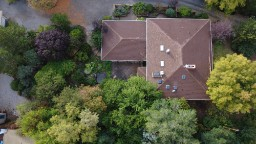
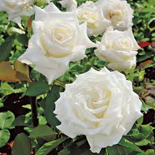
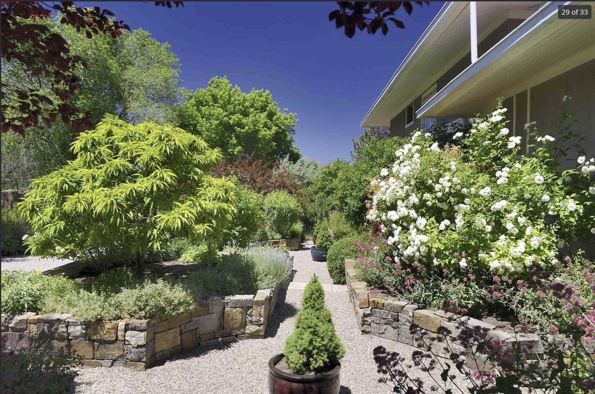

Garden Heritage & Restoration
From Charlotte Wilson's pioneering terraced design to modern sustainable restoration
Explore the Gardens
Comprehensive documentation of 125+ years of landscape evolution

Garden History & Evolution
From Cross Orchard agricultural roots through Charlotte Wilson's pioneering high-desert horticulture to modern restoration—125+ years of landscape innovation.
- Charlotte Wilson's innovative terraced design
- Complete evolution timeline (1900s-present)
- Historic photos and documentation
- Social significance and garden parties

Plant Inventory & Assessment
Comprehensive catalog of historic fruit trees, mature shade trees, and heritage plantings. Current conditions and restoration planning for sustainable plant selections.
- 95+ year old fruit trees assessment
- Complete plant categories and conditions
- Waldron-era garden plantings (2008)
- Restoration and new planting plans

Well & Water Rights
Historic well system with 3 acre-feet water rights, Charlotte Wilson's sluiceway irrigation, and modern sustainable water management design combining historic principles with cutting-edge efficiency.
- Pre-basin well with 15-20 GPM capacity
- Historic sluiceway irrigation system
- Modern zone-based irrigation design
- Water budgeting and conservation

Flowering Calendar
Year-round blooms and seasonal garden highlights. Track the succession of flowers, fruits, and foliage throughout Santa Fe's distinct seasons.
- Spring bulbs and early bloomers
- Summer perennials and roses
- Fall color and late-season interest
- Winter structure and evergreens

Garden & Irrigation System Plan
Comprehensive documentation of the complete garden layout and modern irrigation system design. Detailed zone specifications, plant placement, and implementation guidelines.
- Complete site plan with zones
- Irrigation system specifications
- Installation guidelines and timelines
- Interactive garden map
Featured Garden Photography
Highlights from over a century of garden evolution



Restoration Vision: Honoring the Past, Embracing Sustainability
Our garden restoration combines Charlotte Wilson's innovative water management with modern sustainable practices, creating a demonstration site for high-desert horticulture that honors both heritage and environmental stewardship.